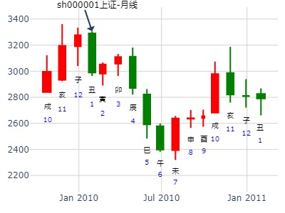

主帖标题: 交流下你2010年作股票是挣了亏了.为什么
起卦方式：铜钱摇卦 占问事宜：关心的事情
起卦公历：2011年1月20日22时48分(北京时间)。
起卦干支： 庚寅年 己丑月 乙亥日 丁亥时
主变卦 地水师(坎宫-归魂) 之 雷水解(震宫) [空亡:申、酉]
玄武 ━ ━ 父母酉金 应 ━ ━ 官鬼戌土
白虎 ━ ━ 兄弟亥水 ━ ━ 父母申金 应
腾蛇 ━ ━×官鬼丑土 ━━━ 妻财午火
勾陈 ━ ━ 妻财午火 世 ━ ━ 妻财午火
朱雀 ━━━ 官鬼辰土 ━━━ 官鬼辰土 世
青龙 ━ ━ 子孙寅木 ━ ━ 子孙寅木
版主看看2010年收益如何啊

主帖标题: 中国重汽1月行情
公历起卦时间：2021年1月15日10时2分
干支：庚子年 己丑月 癸亥日 丁巳时 （日空：子丑）
坎宫：地水师 (归魂) 震宫：雷水解
六神 伏神 本 卦 变 卦
白虎 父母癸酉金 ▅▅ ▅▅ 应 官鬼庚戌土 ▅▅ ▅▅
螣蛇 兄弟癸亥水 ▅▅ ▅▅ 父母庚申金 ▅▅ ▅▅ 应
勾陈 官鬼癸丑土 ▅▅ ▅▅ ╳→ 妻财庚午火 ▅▅▅▅▅
朱雀 妻财戊午火 ▅▅ ▅▅ 世 妻财戊午火 ▅▅ ▅▅
青龙 官鬼戊辰土 ▅▅▅▅▅ 官鬼戊辰土 ▅▅▅▅▅ 世
玄武 子孙戊寅木 ▅▅ ▅▅ 子孙戊寅木 ▅▅ ▅▅
今日五爻的兄到达顶点，今日跌幅。从下周一起亥水旬空。
空方退。下周孙财旺，除辰日外，其他日不错。下下周震荡。
今日寅亥合，生合，止跌，似乎可以在今日或者下周一择低进入，下周五午时出。
个人研究，请勿照此操作，责任自负。
主帖标题: 大家一起来：试测股票2.18-2.28何时涨幅最大？
试测大东海A2.18辛卯星期二-2.28涨幅最大日z？
出生：2020 年 性别：男 占事：没填
排卦：元亨利贞网六爻在线排盘系统 http://www.china95.net
公历起卦时间：2020年2月20日16时29分 (电脑自动)
干支：庚子年 戊寅月 癸巳日 庚申时 （日空：午未）
神煞：驿马－亥 桃花－午 日禄－子 贵人－卯，巳
坎宫：地水师 (归魂) 震宫：雷水解
六神 伏神 本 卦 变 卦
白虎 父母癸酉金 ▅▅ ▅▅ 应 官鬼庚戌土 ▅▅ ▅▅
螣蛇 兄弟癸亥水 ▅▅ ▅▅ 父母庚申金 ▅▅ ▅▅ 应
勾陈 官鬼癸丑土 ▅▅ ▅▅ ╳→ 妻财庚午火 ▅▅▅▅▅
朱雀 妻财戊午火 ▅▅ ▅▅ 世 妻财戊午火 ▅▅ ▅▅
青龙 官鬼戊辰土 ▅▅▅▅▅ 官鬼戊辰土 ▅▅▅▅▅ 世
玄武 子孙戊寅木 ▅▅ ▅▅ 子孙戊寅木 ▅▅ ▅▅
主帖标题: 大家一起来：试测股票何时涨停？
出生：2020 年 性别：男 占事：没填
排卦：元亨利贞网六爻在线排盘系统 http://www.china95.net
公历起卦时间：2020年2月20日16时29分 (电脑自动)
干支：庚子年 戊寅月 癸巳日 庚申时 （日空：午未）
神煞：驿马－亥 桃花－午 日禄－子 贵人－卯，巳
坎宫：地水师 (归魂) 震宫：雷水解
六神 伏神 本 卦 变 卦
白虎 父母癸酉金 ▅▅ ▅▅ 应 官鬼庚戌土 ▅▅ ▅▅
螣蛇 兄弟癸亥水 ▅▅ ▅▅ 父母庚申金 ▅▅ ▅▅ 应
勾陈 官鬼癸丑土 ▅▅ ▅▅ ╳→ 妻财庚午火 ▅▅▅▅▅
朱雀 妻财戊午火 ▅▅ ▅▅ 世 妻财戊午火 ▅▅ ▅▅
青龙 官鬼戊辰土 ▅▅▅▅▅ 官鬼戊辰土 ▅▅▅▅▅ 世
玄武 子孙戊寅木 ▅▅ ▅▅ 子孙戊寅木 ▅▅ ▅▅
主帖标题: [原创]10只股票6个月预测
占事：386中国石化
起卦方式：手动摇卦 www.iqing.net 线上排盘系统
公历时间：2006年4月11日23时26分 星期二
农历时间：丙戌年三月十五子时
干支：丙戌年 壬辰月 辛未日 戊子时 (旬空：戌亥)
神煞：驿马—巳 桃花—子 日禄—酉 贵人—寅，午
坎宫：地水师（归魂） 震宫：雷水解
六神 【本 卦】 【变 卦】
螣蛇 ▅▅ ▅▅ 父母癸酉金 应 ▅▅ ▅▅ 官鬼庚戌土
勾陈 ▅▅ ▅▅ 兄弟癸亥水 ▅▅ ▅▅ 父母庚申金 应
朱雀 ▅▅ ▅▅ 官鬼癸丑土 ×→ ▅▅▅▅▅ 妻财庚午火
青龙 ▅▅ ▅▅ 妻财戊午火 世 ▅▅ ▅▅ 妻财戊午火
玄武 ▅▅▅▅▅ 官鬼戊辰土 ▅▅▅▅▅ 官鬼戊辰土 世
白虎 ▅▅ ▅▅ 子孙戊寅木 ▅▅ ▅▅ 子孙戊寅木
初断：短线两个月没有问题。
主帖标题: 主题：4月12日黄金的走势 1561
主题：4月12日黄金的走势 1561
癸巳 丙辰 戊申 丙辰(日空:寅卯 时空:子丑) 癸巳年三月初三(2013/04/12 08:05:25)
地水师 雷水解
朱雀 父母酉金 ∥ 应 官鬼戌土 ∥
青龙 兄弟亥水 ∥ 父母申金 ∥ 应
玄武 官鬼丑土 × 妻财午火 ／
白虎 妻财午火 ∥ 坎 妻财午火 ∥
腾蛇 官鬼辰土 ／ 官鬼辰土 ／ 震
勾陈 子孙寅木 ∥ 子孙寅木 ∥
子孙日破，大跌，亥日更是绝午火。
主帖标题: 梅花小孩：四月月K数理卦 2743.54
主题：4月周K数理卦 2840.41
庚子 庚辰 癸巳 丁巳 (午未空) 庚子年三月廿八(2020/04/20 09:53:33)
地水师 雷水解
白虎 父母酉金 ∥ 应 官鬼戌土 ∥
腾蛇 兄弟亥水 ∥ 父母申金 ∥ 应
勾陈 官鬼丑土 × 妻财午火 ／
朱雀 妻财午火 ∥ 坎 妻财午火 ∥
青龙 官鬼辰土 ／ 官鬼辰土 ／ 震
玄武 子孙寅木 ∥ 子孙寅木 ∥
注：数理卦，不可太当真
主帖标题: 2016年5月4日星期三上证指数涨跌预测
公历：2016年5月4日9时30分，星期三。
干支：丙申年 壬辰月 丙戌日 癸巳时 (卦身：寅)
主变卦 地水师(坎宫-归魂) 之 雷水解(震宫) [空亡:午、未]
青龙 ▅▅ ▅▅ 父母癸酉金 应 ▅▅ ▅▅ 官鬼庚戌土
玄武 ▅▅ ▅▅ 兄弟癸亥水 ▅▅ ▅▅ 父母庚申金 应
白虎 ▅▅ ▅▅×官鬼癸丑土 ▅▅▅▅▅ 妻财庚午火
螣蛇 ▅▅ ▅▅ 妻财戊午火 世 ▅▅ ▅▅ 妻财戊午火
勾陈 ▅▅▅▅▅ 官鬼戊辰土 ▅▅▅▅▅ 官鬼戊辰土 世
朱雀 ▅▅ ▅▅ 子孙戊寅木 ▅▅ ▅▅ 子孙戊寅木
马后炮：子日世爻日破，暴跌，预警。
主帖标题: 2016年6月2日星期四上证指数涨跌预测
公历：2016年6月2日9时30分，星期四。
干支：丙申年 癸巳月 乙卯日 辛巳时 (卦身：寅)
主变卦 地水师(坎宫-归魂) 之 雷水解(震宫) [空亡:子、丑]
玄武 ▅▅ ▅▅ 父母癸酉金 应 ▅▅ ▅▅ 官鬼庚戌土
白虎 ▅▅ ▅▅ 兄弟癸亥水 ▅▅ ▅▅ 父母庚申金 应
螣蛇 ▅▅ ▅▅×官鬼癸丑土 ▅▅▅▅▅ 妻财庚午火
勾陈 ▅▅ ▅▅ 妻财戊午火 世 ▅▅ ▅▅ 妻财戊午火
朱雀 ▅▅▅▅▅ 官鬼戊辰土 ▅▅▅▅▅ 官鬼戊辰土 世
青龙 ▅▅ ▅▅ 子孙戊寅木 ▅▅ ▅▅ 子孙戊寅木
主帖标题: 2016年6月6日星期一上证指数预测
公历：2016年6月6日9时30分，星期一。
干支：丙申年 甲午月 己未日 己巳时 (卦身：寅)
主变卦 地水师(坎宫-归魂) 之 雷水解(震宫) [空亡:子、丑]
勾陈 ▅▅ ▅▅ 父母癸酉金 应 ▅▅ ▅▅ 官鬼庚戌土
朱雀 ▅▅ ▅▅ 兄弟癸亥水 ▅▅ ▅▅ 父母庚申金 应
青龙 ▅▅ ▅▅×官鬼癸丑土 ▅▅▅▅▅ 妻财庚午火
玄武 ▅▅ ▅▅ 妻财戊午火 世 ▅▅ ▅▅ 妻财戊午火
白虎 ▅▅▅▅▅ 官鬼戊辰土 ▅▅▅▅▅ 官鬼戊辰土 世
螣蛇 ▅▅ ▅▅ 子孙戊寅木 ▅▅ ▅▅ 子孙戊寅木
勉强解释：未冲开动爻，震荡。
主帖标题: 2016年6月30日星期四上证指数预测
公历：2016年6月30日9时30分，星期四。
干支：丙申年 甲午月 癸未日 丁巳时 (卦身：寅)
主变卦 地水师(坎宫-归魂) 之 雷水解(震宫) [空亡:申、酉]
白虎 ▅▅ ▅▅ 父母癸酉金 应 ▅▅ ▅▅ 官鬼庚戌土
螣蛇 ▅▅ ▅▅ 兄弟癸亥水 ▅▅ ▅▅ 父母庚申金 应
勾陈 ▅▅ ▅▅×官鬼癸丑土 ▅▅▅▅▅ 妻财庚午火
朱雀 ▅▅ ▅▅ 妻财戊午火 世 ▅▅ ▅▅ 妻财戊午火
青龙 ▅▅▅▅▅ 官鬼戊辰土 ▅▅▅▅▅ 官鬼戊辰土 世
玄武 ▅▅ ▅▅ 子孙戊寅木 ▅▅ ▅▅ 子孙戊寅木
主帖标题: 2020.06.18日上证指数擂台赛第二十二场第4局 Z方（日测）
公历起卦时间：2020年6月17日17时30分 (手工指定)
干支：庚子年 壬午月 辛卯日 丁酉时 （日空：午未）
神煞：驿马－巳 桃花－子 日禄－酉 贵人－寅，午
坎宫：地水师 (归魂) 震宫：雷水解
六神 伏神 本 卦 变 卦
螣蛇 父母癸酉金 ▅▅ ▅▅ 应 官鬼庚戌土 ▅▅ ▅▅
勾陈 兄弟癸亥水 ▅▅ ▅▅ 父母庚申金 ▅▅ ▅▅ 应
朱雀 官鬼癸丑土 ▅▅ ▅▅ ╳→ 妻财庚午火 ▅▅▅▅▅
青龙 妻财戊午火 ▅▅ ▅▅ 世 妻财戊午火 ▅▅ ▅▅
玄武 官鬼戊辰土 ▅▅▅▅▅ 官鬼戊辰土 ▅▅▅▅▅ 世
白虎 子孙戊寅木 ▅▅ ▅▅ 子孙戊寅木 ▅▅ ▅▅
主帖标题: RQ中兵红箭6.10甲午五-6.17辛丑五共6日哪日顶？
Q中兵红箭6.10甲午五-6.17辛丑五共6日哪日顶？
出生：2022 年 性别：男 占事：没填
公历起卦时间：2022年6月12日8时31分 (电脑自动)
干支：壬寅年 丙午月 丙申日 壬辰时 （日空：辰巳）
神煞：驿马－寅 桃花－酉 日禄－巳 贵人－酉，亥
坎宫：地水师 (归魂) 震宫：雷水解
六神 伏神 本 卦 变 卦
青龙 父母癸酉金 ▅▅ ▅▅ 应 官鬼庚戌土 ▅▅ ▅▅
玄武 兄弟癸亥水 ▅▅ ▅▅ 父母庚申金 ▅▅ ▅▅ 应
白虎 官鬼癸丑土 ▅▅ ▅▅ ╳→ 妻财庚午火 ▅▅▅▅▅
螣蛇 妻财戊午火 ▅▅ ▅▅ 世 妻财戊午火 ▅▅ ▅▅
勾陈 官鬼戊辰土 ▅▅▅▅▅ 官鬼戊辰土 ▅▅▅▅▅ 世
朱雀 子孙戊寅木 ▅▅ ▅▅ 子孙戊寅木 ▅▅ ▅▅

姓名： 男 占事：17日大盘指数
起卦方式：时间起卦
公历时间：2015年7月17日10时19分
干 支：乙未年 癸未月 甲午日 己巳时
旬 空：辰巳 申酉 (辰巳) 戌亥
坎宫：地水师（归魂） 震宫：雷水解
六神 【本 卦】 【变 卦】
玄武 ▄▄ ▄▄ 父母癸酉金 应 ▄▄ ▄▄ 官鬼庚戌土
白虎 ▄▄ ▄▄ 兄弟癸亥水 ▄▄ ▄▄ 父母庚申金 应
螣蛇 ▄▄ ▄▄ 官鬼癸丑土 X-> ▄▄▄▄▄ 妻财庚午火
勾陈 ▄▄ ▄▄ 妻财戊午火 世 ▄▄ ▄▄ 妻财戊午火
朱雀 ▄▄▄▄▄ 官鬼戊辰土 ▄▄▄▄▄ 官鬼戊辰土 世
青龙 ▄▄ ▄▄ 子孙戊寅木 ▄▄ ▄▄ 子孙戊寅木
六四：师左次，无咎。
象曰：左次无咎，未失常也。

主帖标题: 2016年7月4日星期一上证指数预测
公历：2016年7月4日9时30分，星期一。
干支：丙申年 甲午月 丁亥日 乙巳时 (卦身：寅)
主变卦 地水师(坎宫-归魂) 之 雷水解(震宫) [空亡:午、未]
青龙 ▅▅ ▅▅ 父母癸酉金 应 ▅▅ ▅▅ 官鬼庚戌土
玄武 ▅▅ ▅▅ 兄弟癸亥水 ▅▅ ▅▅ 父母庚申金 应
白虎 ▅▅ ▅▅×官鬼癸丑土 ▅▅▅▅▅ 妻财庚午火
螣蛇 ▅▅ ▅▅ 妻财戊午火 世 ▅▅ ▅▅ 妻财戊午火
勾陈 ▅▅▅▅▅ 官鬼戊辰土 ▅▅▅▅▅ 官鬼戊辰土 世
朱雀 ▅▅ ▅▅ 子孙戊寅木 ▅▅ ▅▅ 子孙戊寅木
主帖标题: 7.5-9日周卦数理卦
公历起卦时间：2021年7月2日15时16分 (手工指定)
干支：辛丑年 甲午月 辛亥日 丙申时 （日空：寅卯）
坎宫：地水师 (归魂) 震宫：雷水解
六神 伏神 本 卦 变 卦
螣蛇 父母癸酉金 ▅▅ ▅▅ 应 官鬼庚戌土 ▅▅ ▅▅
勾陈 兄弟癸亥水 ▅▅ ▅▅ 父母庚申金 ▅▅ ▅▅ 应
朱雀 官鬼癸丑土 ▅▅ ▅▅ ╳→ 妻财庚午火 ▅▅▅▅▅
青龙 妻财戊午火 ▅▅ ▅▅ 世 妻财戊午火 ▅▅ ▅▅
玄武 官鬼戊辰土 ▅▅▅▅▅ 官鬼戊辰土 ▅▅▅▅▅ 世
白虎 子孙戊寅木 ▅▅ ▅▅ 子孙戊寅木 ▅▅ ▅▅
兄弟五爻，今日空能极大释放。
官发动护盘化财，大象不错。
下周木火为主，孙财两旺，总体，不看空，看多。
注：数理卦，不可全信。
招商证券最近2周如何 师之解。自动起卦(起卦方式) 王
公历：2022年7月28日11时42分，星期四。
干支：壬寅年 丁未月 壬午日 丙午时 (卦身：寅)
主变卦 地水师(坎宫-归魂) 之 雷水解(震宫) [空亡:申、酉]
白虎 ▅▅ ▅▅ 父母癸酉金 应 ▅▅ ▅▅ 官鬼庚戌土
螣蛇 ▅▅ ▅▅ 兄弟癸亥水 ▅▅ ▅▅ 父母庚申金 应
勾陈 ▅▅ ▅▅×官鬼癸丑土 ▅▅▅▅▅ 妻财庚午火
朱雀 ▅▅ ▅▅ 妻财戊午火 世 ▅▅ ▅▅ 妻财戊午火
青龙 ▅▅▅▅▅ 官鬼戊辰土 ▅▅▅▅▅ 官鬼戊辰土 世
玄武 ▅▅ ▅▅ 子孙戊寅木 ▅▅ ▅▅ 子孙戊寅木
占事: 8月13——17日上证指数走势
方式：手动摇卦
公历时间：2007年8月11日11时35分
干支：丁亥年 戊申月 丁丑日 丙午时 旬空：午未 寅卯 申酉 寅卯
坎宫：地水师（归魂）震宫：雷水解
青龙 ▄▄ ▄▄ 父母癸酉金 应 ▄▄ ▄▄ 官鬼庚戌土
玄武 ▄▄ ▄▄ 兄弟癸亥水 ▄▄ ▄▄ 父母庚申金 应
白虎 ▄▄ ▄▄ 官鬼癸丑土 X-> ▄▄▄▄▄ 妻财庚午火
螣蛇 ▄▄ ▄▄ 妻财戊午火 世 ▄▄ ▄▄ 妻财戊午火
勾陈 ▄▄▄▄▄ 官鬼戊辰土 ▄▄▄▄▄ 官鬼戊辰土 世
朱雀 ▄▄ ▄▄ 子孙戊寅木 ▄▄ ▄▄ 子孙戊寅木
此卦怪，午日也不涨。
免强解释，青龙为利好，入日墓，戌日刑开。但未日却没有冲开？
今天大跌后本周与下周涨跌横如何？
公历起卦时间：2015年8月19日0时5分 (在线摇卦)
干支：乙未年 甲申月 丁卯日 庚子时 （日空：戌亥）
坎宫：地水师 (归魂) 震宫：雷水解
六神 伏神 本 卦 变 卦
青龙 父母癸酉金 ▅▅ ▅▅ 应 官鬼庚戌土 ▅▅ ▅▅
玄武 兄弟癸亥水 ▅▅ ▅▅ 父母庚申金 ▅▅ ▅▅ 应
白虎 官鬼癸丑土 ▅▅ ▅▅ ╳→ 妻财庚午火 ▅▅▅▅▅
腾蛇 妻财戊午火 ▅▅ ▅▅ 世 妻财戊午火 ▅▅ ▅▅
勾陈 官鬼戊辰土 ▅▅▅▅▅ 官鬼戊辰土 ▅▅▅▅▅ 世
朱雀 子孙戊寅木 ▅▅ ▅▅ 子孙戊寅木 ▅▅ ▅▅
卯日虽涨，但是冲父母暗动。
巳冲兄弟亥水暗动。大跌。
马后炮：申月子孙月破，易大跌
主帖标题: 2016-08-18复盘...
公历：2016年08月18日09时16分 星期四
干支：丙申 丙申 壬申 乙巳 报数起局阴六局
旬空：辰巳 辰巳 戌亥 寅卯 旬首：甲辰
值符天芮在七宫 值使死门在一宫 超级奇门排宫法
┌─────────┬─────────┬─────────┐
│癸 六合 │戊 太阴 │丙 螣蛇 │
│ 天冲 辛 │ 天辅 庚 │ 天英 丁 │
│ 休门 庚 │ 生门 丁 │ 伤门 壬 禽己│
│太阴 │螣蛇 │值符 │
├─────────┼─────────┼─────────┤
│丁 白虎○ │壬 │庚 值符 │
│ 天任 丙 │ │ 天芮 壬 禽己│
│ 开门 辛 │ 己│ 杜门 乙 │
│六合 │ │九天 │
├─────────┼─────────┼─────────┤
│己 玄武○ │乙 九地 │辛 九天 马│
│ 天蓬 癸 │ 天心 戊 │ 天柱 乙 │
│ 惊门 丙 │ 死门 癸 │ 景门 戊 │
│白虎 │玄武 │九地 │
└─────────┴─────────┴─────────┘
干支：丙申年 丙申月 壬申日 乙巳时 （日空：戌亥）
神煞：驿马－寅 桃花－酉 日禄－亥 贵人－卯，巳
坎宫：地水师(归魂) 震宫：雷水解
六神 伏神 本 卦 变 卦
白虎 父母癸酉金 ▅▅ ▅▅ 应 官鬼庚戌土 ▅▅ ▅▅
腾蛇 兄弟癸亥水 ▅▅ ▅▅ 父母庚申金 ▅▅ ▅▅ 应
勾陈 官鬼癸丑土 ▅▅ ▅▅ ╳→ 妻财庚午火 ▅▅▅▅▅
朱雀 妻财戊午火 ▅▅ ▅▅ 世 妻财戊午火 ▅▅ ▅▅
青龙 官鬼戊辰土 ▅▅▅▅▅ 官鬼戊辰土 ▅▅▅▅▅ 世
玄武 子孙戊寅木 ▅▅ ▅▅ 子孙戊寅木 ▅▅ ▅▅
马后炮：申日子孙日破月破。
师之解官化财丑化午。.note九戒 占事：焦煤1501 酉月9月
公历时间：2014年9月2日19时11分
干 支：甲午年 壬申月 丙子日 戊戌时
旬 空：辰巳 戌亥 (申酉) 辰巳
坎宫：地水师（归魂） 震宫：雷水解
六神 【本 卦】 【变 卦】
青龙 ▄▄ ▄▄ 父母癸酉金 应 ▄▄ ▄▄ 官鬼庚戌土
玄武 ▄▄ ▄▄ 兄弟癸亥水 ▄▄ ▄▄ 父母庚申金 应
白虎 ▄▄ ▄▄ 官鬼癸丑土 X-> ▄▄▄▄▄ 妻财庚午火
螣蛇 ▄▄ ▄▄ 妻财戊午火 世 ▄▄ ▄▄ 妻财戊午火
勾陈 ▄▄▄▄▄ 官鬼戊辰土 ▄▄▄▄▄ 官鬼戊辰土 世
朱雀 ▄▄ ▄▄ 子孙戊寅木 ▄▄ ▄▄ 子孙戊寅木
月卦定性为主：起卦日月占主要决定因素。
虽是官化财，但财被子冲飞，不一定能涨。
其中： 未日跌，丑日涨。
求测人：某人，男，乙卯(1975年)，自动起卦(起卦方式)
占问事宜：000638万方发展下周涨跌
公历：2016年9月24日12时8分，星期六。
干支：丙申年 丁酉月 己酉日 庚午时 (卦身：寅)
主变卦 地水师(坎宫-归魂) 之 雷水解(震宫) [空亡:寅、卯]
勾陈 ▅▅ ▅▅ 父母癸酉金 应 ▅▅ ▅▅ 官鬼庚戌土
朱雀 ▅▅ ▅▅ 兄弟癸亥水 ▅▅ ▅▅ 父母庚申金 应
青龙 ▅▅ ▅▅×官鬼癸丑土 ▅▅▅▅▅ 妻财庚午火
玄武 ▅▅ ▅▅ 妻财戊午火 世 ▅▅ ▅▅ 妻财戊午火
白虎 ▅▅▅▅▅ 官鬼戊辰土 ▅▅▅▅▅ 官鬼戊辰土 世
螣蛇 ▅▅ ▅▅ 子孙戊寅木 ▅▅ ▅▅ 子孙戊寅木
占事：000858近期会不会涨？ 王
公历起卦时间：2014年10月8日16时21分 (在线摇卦)
寒露：2014年10月08日18时20分
干支：甲午年 癸酉月 壬子日 戊申时 （日空：寅卯）
坎宫：地水师 (归魂) 震宫：雷水解
六神 伏神 本 卦 变 卦
白虎 父母癸酉金 ▅▅ ▅▅ 应 官鬼庚戌土 ▅▅ ▅▅
腾蛇 兄弟癸亥水 ▅▅ ▅▅ 父母庚申金 ▅▅ ▅▅ 应
勾陈 官鬼癸丑土 ▅▅ ▅▅ ╳→ 妻财庚午火 ▅▅▅▅▅
朱雀 妻财戊午火 ▅▅ ▅▅ 世 妻财戊午火 ▅▅ ▅▅
青龙 官鬼戊辰土 ▅▅▅▅▅ 官鬼戊辰土 ▅▅▅▅▅ 世
玄武 子孙戊寅木 ▅▅ ▅▅ 子孙戊寅木 ▅▅ ▅▅
六四：师左次，无咎。象曰：左次无咎，未失常也。
马后炮： 定性卦，则日辰重要，日冲破财爻午火。
求测人：某人，男，庚申(1980年)，自动起卦(起卦方式)
占问事宜：2016.10.17前三名？
公历：2016年10月14日15时35分，星期五。
干支：丙申年 戊戌月 己巳日 壬申时 (卦身：寅)
主变卦 地水师(坎宫-归魂) 之 雷水解(震宫) [空亡:戌、亥]
勾陈 ▅▅ ▅▅ 父母癸酉金 应 ▅▅ ▅▅ 官鬼庚戌土
朱雀 ▅▅ ▅▅ 兄弟癸亥水 ▅▅ ▅▅ 父母庚申金 应
青龙 ▅▅ ▅▅×官鬼癸丑土 ▅▅▅▅▅ 妻财庚午火
玄武 ▅▅ ▅▅ 妻财戊午火 世 ▅▅ ▅▅ 妻财戊午火
白虎 ▅▅▅▅▅ 官鬼戊辰土 ▅▅▅▅▅ 官鬼戊辰土 世
螣蛇 ▅▅ ▅▅ 子孙戊寅木 ▅▅ ▅▅ 子孙戊寅木
主帖标题: 特变电工10.13三收盘走势?
出生：2021 年 性别：男 占事：特变电工10.14四收盘走势?
公历起卦时间：2021年10月13日14时53分 (电脑自动)
干支：辛丑年 戊戌月 甲午日 辛未时 （日空：辰巳）
神煞：驿马－申 桃花－卯 日禄－寅 贵人－丑，未
坎宫：地水师 (归魂) 震宫：雷水解
六神 伏神 本 卦 变 卦
玄武 父母癸酉金 ▅▅ ▅▅ 应 官鬼庚戌土 ▅▅ ▅▅
白虎 兄弟癸亥水 ▅▅ ▅▅ 父母庚申金 ▅▅ ▅▅ 应
螣蛇 官鬼癸丑土 ▅▅ ▅▅ ╳→ 妻财庚午火 ▅▅▅▅▅
勾陈 妻财戊午火 ▅▅ ▅▅ 世 妻财戊午火 ▅▅ ▅▅
朱雀 官鬼戊辰土 ▅▅▅▅▅ 官鬼戊辰土 ▅▅▅▅▅ 世
青龙 子孙戊寅木 ▅▅ ▅▅ 子孙戊寅木 ▅▅ ▅▅
主题：000661长春高新下半年的走势
己亥 甲戌 戊申 丁巳 (日空:寅卯 时空:子丑) 己亥年十月十一(2019/11/07 10:57:51)
地水师 雷水解
朱雀 父母辛酉 ∥ 应 官鬼壬戌 ∥
青龙 兄弟癸亥 ∥ 父母庚申 ∥ 应
玄武 官鬼癸丑 × 妻财戊午 ／
白虎 妻财戊午 ∥ 坎 妻财戊午 ∥
腾蛇 官鬼丙辰 ／ 官鬼丙辰 ／ 震
勾陈 子孙甲寅 ∥ 子孙甲寅 ∥
主帖标题: 红红火火 股票￥金融
4.风华高科000636下周涨跌 手摇卦
姓名： 男 占事：起卦方式：手动摇卦
公历时间：2019年11月28日20时36分
干 支：己亥年 乙亥月 己巳日 甲戌时
旬 空：辰巳 申酉 戌亥 申酉
神 煞：驿马─亥 桃花─午 日禄─午 贵人─子，申
坎宫：地水师（归魂） 震宫：雷水解
六神 【本 卦】 【变 卦】
勾陈 ▄▄ ▄▄ 父母癸酉金 应 ▄▄ ▄▄ 官鬼庚戌土
朱雀 ▄▄ ▄▄ 兄弟癸亥水 ▄▄ ▄▄ 父母庚申金 应
青龙 ▄▄ ▄▄ 官鬼癸丑土 × ▄▄▄▄▄ 妻财庚午火
玄武 ▄▄ ▄▄ 妻财戊午火 世 ▄▄ ▄▄ 妻财戊午火
白虎 ▄▄▄▄▄ 官鬼戊辰土 ▄▄▄▄▄ 官鬼戊辰土 世
螣蛇 ▄▄ ▄▄ 子孙戊寅木 ▄▄ ▄▄ 子孙戊寅木
主帖标题: 000738子月涨跌
壬辰年 壬子月 癸卯日 丁巳时 （日空：辰巳）
神煞：驿马－巳 桃花－子 日禄－子 贵人－卯，巳
坎宫：地水师 (归魂) 震宫：雷水解
六神 伏神 本 卦 变 卦
白虎 父母癸酉金 ▅▅ ▅▅ 应 官鬼庚戌土 ▅▅ ▅▅
腾蛇 兄弟癸亥水 ▅▅ ▅▅ 父母庚申金 ▅▅ ▅▅ 应
勾陈 官鬼癸丑土 ▅▅ ▅▅ ╳→ 妻财庚午火 ▅▅▅▅▅
朱雀 妻财戊午火 ▅▅ ▅▅ 世 妻财戊午火 ▅▅ ▅▅
青龙 官鬼戊辰土 ▅▅▅▅▅ 官鬼戊辰土 ▅▅▅▅▅ 世
玄武 子孙戊寅木 ▅▅ ▅▅ 子孙戊寅木 ▅▅ ▅▅

师之解官化财丑化午。 占事: 大盘明天 走势
公历时间：2014年12月11日12时21分
干支：甲午年 丙子月 丙辰日 甲午时
旬空：辰巳 申酉 子丑 辰巳
坎宫：地水师（归魂） 震宫：雷水解
六神 【本 卦】 【变 卦】
青龙 ▄▄ ▄▄ 父母癸酉金 应 ▄▄ ▄▄ 官鬼庚戌土
玄武 ▄▄ ▄▄ 兄弟癸亥水 ▄▄ ▄▄ 父母庚申金 应
白虎 ▄▄ ▄▄ 官鬼癸丑土 X-> ▄▄▄▄▄ 妻财庚午火
螣蛇 ▄▄ ▄▄ 妻财戊午火 世 ▄▄ ▄▄ 妻财戊午火
勾陈 ▄▄▄▄▄ 官鬼戊辰土 ▄▄▄▄▄ 官鬼戊辰土 世
朱雀 ▄▄ ▄▄ 子孙戊寅木 ▄▄ ▄▄ 子孙戊寅木
主帖标题: 数理卦提前锁定黒马
300603 2019 年12月30号
己亥 丙子 辛丑 丙申 (辰巳空) 己亥年腊月初五(2019/12/30 15:00:00)
地水师 雷水解
腾蛇 父母酉金 ∥ 应 官鬼戌土 ∥
勾陈 兄弟癸亥 ∥ 父母申金 ∥ 应
朱雀 官鬼丑土 × 妻财庚午 ／
青龙 妻财午火 ∥ 世 妻财午火 ∥
玄武 官鬼辰土 ／ 官鬼辰土 ／ 世
白虎 子孙寅木 ∥ 子孙寅木 ∥
神奇！
公历起卦时间：2020年12月18日9时52分 (按农历时间起卦)
干支：庚子年 戊子月 乙未日 辛巳时 （日空：辰巳）
请参见节气卦帖子，本帖预测请忽略。
坎宫：地水师 (归魂) 震宫：雷水解
六神 伏神 本 卦 变 卦
玄武 父母癸酉金 ▅▅ ▅▅ 应 官鬼庚戌土 ▅▅ ▅▅
白虎 兄弟癸亥水 ▅▅ ▅▅ 父母庚申金 ▅▅ ▅▅ 应
螣蛇 官鬼癸丑土 ▅▅ ▅▅ ╳→ 妻财庚午火 ▅▅▅▅▅
勾陈 妻财戊午火 ▅▅ ▅▅ 世 妻财戊午火 ▅▅ ▅▅
朱雀 官鬼戊辰土 ▅▅▅▅▅ 官鬼戊辰土 ▅▅▅▅▅ 世
青龙 子孙戊寅木 ▅▅ ▅▅ 子孙戊寅木 ▅▅ ▅▅
请参见节气卦帖子，本帖预测请忽略。
12月18日高点时间卦，为一周高点。巳时辰巳时段。午时没有午段，故应在巳时巳段。
财午未日余气，巳时辰巳时段高点。丑日起转多。总体偏多。
请参见节气卦帖子，本帖预测请忽略。
个人研究，请勿照此操作，责任自负。
干支：庚子年 戊子月 乙未日 甲申时 （日空：辰巳）
坤宫：地天泰 (六合) 震宫：地风升
六神 伏神 本 卦 变 卦
玄武 子孙癸酉金 ▅▅ ▅▅ 应 子孙癸酉金 ▅▅ ▅▅
白虎 妻财癸亥水 ▅▅ ▅▅ 妻财癸亥水 ▅▅ ▅▅
螣蛇 兄弟癸丑土 ▅▅ ▅▅ 兄弟癸丑土 ▅▅ ▅▅ 世
勾陈 兄弟甲辰土 ▅▅▅▅▅ 世 子孙辛酉金 ▅▅▅▅▅
朱雀 父母乙巳火 官鬼甲寅木 ▅▅▅▅▅ 妻财辛亥水 ▅▅▅▅▅
青龙 妻财甲子水 ▅▅▅▅▅ ○→ 兄弟辛丑土 ▅▅ ▅▅ 应
周一拿不准，另起卦预测。弱妻财动变丑，冲散。但戌日未时不散。兄弟辰土冲空填实，偏空。请参见节气卦帖子，本帖预测请忽略。

主帖标题: 测酉日 22日大盘
公历起卦时间：2022年12月21日15时32分 (手工指定)
干支：壬寅年 壬子月 戊申日 庚申时 （日空：寅卯）
坎宫：地水师 (归魂) 震宫：雷水解
六神 伏神 本 卦 变 卦
朱雀 父母癸酉金 ▅▅ ▅▅ 应 官鬼庚戌土 ▅▅ ▅▅
青龙 兄弟癸亥水 ▅▅ ▅▅ 父母庚申金 ▅▅ ▅▅ 应
玄武 官鬼癸丑土 ▅▅ ▅▅ ╳→ 妻财庚午火 ▅▅▅▅▅
白虎 妻财戊午火 ▅▅ ▅▅ 世 妻财戊午火 ▅▅ ▅▅
螣蛇 官鬼戊辰土 ▅▅▅▅▅ 官鬼戊辰土 ▅▅▅▅▅ 世
勾陈 子孙戊寅木 ▅▅ ▅▅ 子孙戊寅木 ▅▅ ▅▅
酉明日临日，不入动爻库。见底回升。